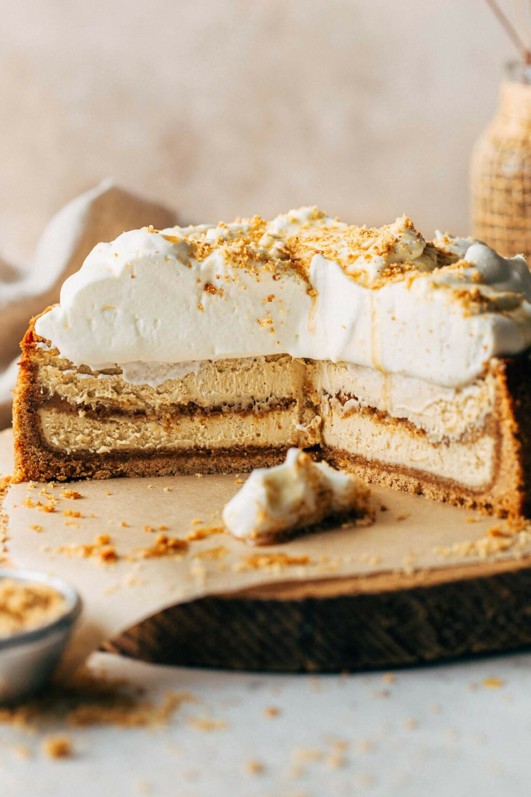

Maple Brown Butter Cheesecake
Home

Description
his brown butter cheesecake is LIFE CHANGING.
It's a maple and brown butter cheesecake with a brown butter
graham cracker crust. The crust covers the bottom, sides,
and is baked as a double layer in the center of the cheesecake!
Ingredients
Brown Butter Graham Cracker Crust
- (196g) unsalted butter
- (420g) ground graham crackers
- (150) granulated sugar
- 1/2 tsp ground cinnamon
- pinch of salt
Maple Brown Butter Cheesecake
- 6 tbsp unsalted butter
- 4 8oz blocks full fat Philadelphia cream cheese, room temp
- (100g) dark brown sugar, packed
- 2 tbsp cornstarch
- (325g) pure maple syrup
- 3 large eggs + 1 egg yolk, room temp
- 1 tbsp vanilla extract
- (240g) sour cream, room temp
Toppings
- (480ml) heavy whipping cream
- 1 tbsp powdered sugar
- Extra graham cracker crust, for sprinkling
- Pure maple syrup, to drizzle
Steps
Brown Butter Grahap Cracker Crust
-